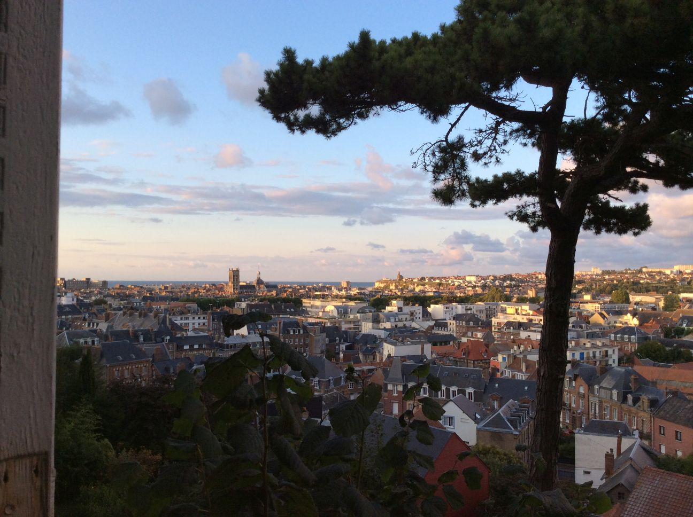

DieppeDit is een verslag van een schaaktoernooi in Dieppe dat door Lucas van Foreest geschreven is.Op een dag (21 augustus 2014) Ging ik van huis (Groningen) Met mijn familie (veel) Naar een schaaktoernooi in Dieppe.  Dieppe. We bleven eerst 1 dag bij een andere schaakfamilie die ook mededen aan het schaaktoernooi. Op 22 augustus kwamen we aan in Dieppe. Dieppe ligt aan de zee en heeft een strand van stenen. En toen moesten we meteen schaken. Behalve ik deden ook al mijn broertjes ( verslag Pieter, verslag Jorden) en zusje mee. De eerste ronde won ik gemakkelijk van 1800. Hij wou graag analyseren en zei: "zzzzwould zjou like zo ...(hij wist niet wat analyseren in het engels was) zo ...". Toen zei ik nee. Daarna partij geanalyseerd met Twan Burg die heel erg toevallig ook in Dieppe was. Het huisje waar we deze week in verbleven was heel cool, je kon helemaal naar boven kijken omdat het hele huis vol met spiegels was. Het waren er 92. De tweede ronde speelde ik heel solide remise tegen 2350. Wat grappig was is dat hij zijn zetten opschreef en er daarna nog 10 keer eroverheen hetzelfde schreef zodat zijn notatie nauwelijks meer te lezen was. Hij kwam ook in tijdnood want hij was iets van 2 minuten per zet met schrijven bezig. De derde ronde won ik gemakkelijk van een 1800 speler. Onder de 2000 win je altijd van je tegenstander als je niet meer kan verliezen. De vierde ronde won ik ongemakkelijk van 2300. De vijfde ronde speelde ik solide remise tegen 2470. Wat erg solide is want ik speelde met zwart. De zesde ronde speelde ik solide remise tegen 2200. Wat onsolide is want ik ben beter en ik ging nog bijna verliezen ook. De zevende ronde speelde ik solide remise tegen 2300. Wat solide is. De achtste ronde speelde ik solide remise tegen 2350. Wat bijna niet solide is want ik stond verloren maar ik ben goed dus ik speel nog remise De negende ronde won ik gemakkelijk van 2300. Met 120 punten erbij heb ik degelijk geschaakt. |